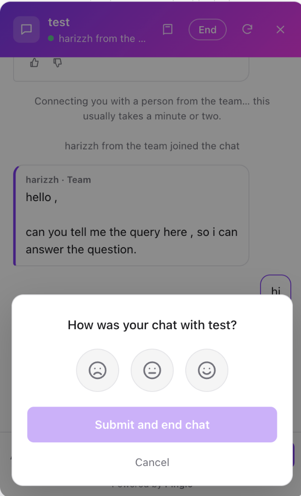
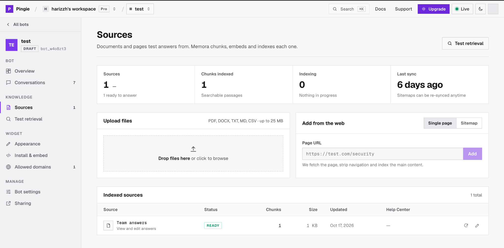
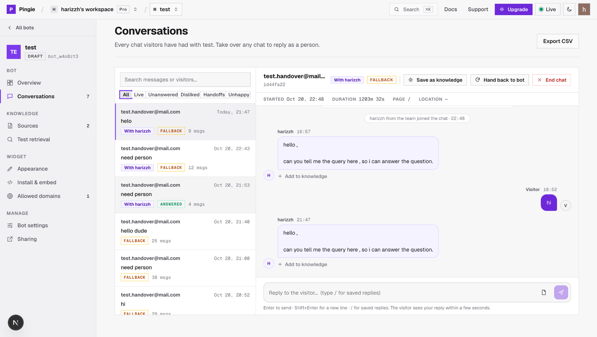
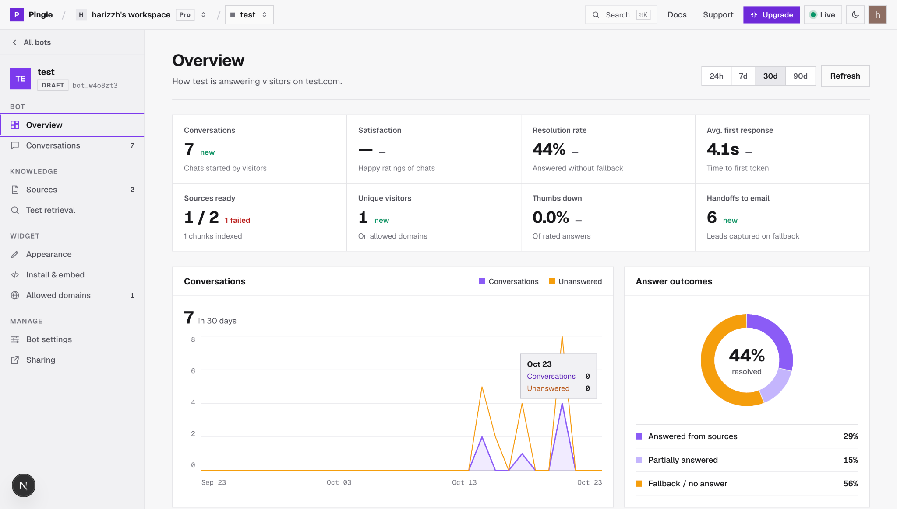
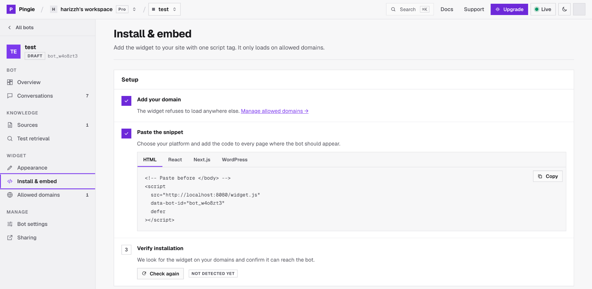

What Pingie is, who it serves, what it does, and how its parts fit together: a visual guide for product, support and engineering readers.
Nine sections, from what Pingie is to how it is built. Each page covers one idea.
Pingie puts an AI support assistant on a business's website. The business teaches it with its own files, pages and written answers. The assistant answers visitors only from that material, shows its sources, and says so when it doesn't know. The support team sees every chat in one dashboard and can take over any conversation.
Files, web pages, sitemaps and team-written answers are the only knowledge the assistant uses.
Only the passages an answer actually cites become source chips under the reply.
When nothing relevant is found, it says so and offers a person or takes the visitor's email.
Knowledge, conversations, live chat, analytics, appearance and team access in one place.
Pingie trades breadth for trust: it would rather say “I don't know” than answer from outside the business's own material.
Upload files, add pages or a sitemap, write team answers.
One script tag, limited to allowed domains.
Retrieve passages, write a short cited reply.
Review chats, teach missed answers.
Small and growing businesses whose support or marketing staff are mostly non-technical. The design goal is a live bot within ten minutes of signing up.
Visitors wait hours for an email reply.
Answers stream word by word within seconds, around the clock, from the business's own content.
The team answers the same questions again and again.
Common questions are answered automatically. An answer taught once is reused word for word.
Questions the bot can't answer get lost.
Each one becomes a lead, a live handoff, or a knowledge gap listed on the Overview page.
| Uses | |
|---|---|
| Website visitors | Chat widget |
| Support team | Dashboard: owner, editor or viewer |
| Pingie team | Admin console: plans and workspaces |
| Everyone | Documentation site and API reference |
Every capability carries a status. Status reflects the code in the ping repository (main @ 1e01ad8, 20 Oct 2026). Screenshots come from the product brief and can show a newer build.
Everything Pingie does, grouped the way the dashboard groups it. Status shows what the repository implements today.
One-file widget with streamed answers, source chips, suggestions, feedback and memory across pages.
Files up to 25 MB, single pages, sitemaps up to 200 pages, and team answers.
Similarity floor, cited passages, partial and fallback outcomes, no general-knowledge answers.
Filters, search, full transcripts with outcomes and citations, leads and CSV export.
Visitors ask for a person; available agents are alerted, take over and hand back.
Answers written from the inbox join the “Team answers” source and are sent word for word.
Finished chats a teammate answered are scrubbed and added to retrieval automatically.
KPIs with period comparison, trends, outcomes, top pages, top questions and knowledge gaps.
Title, welcome text, suggestions, accent colour, theme, launcher icon, position and badge.
Snippets for HTML, React, Next.js and WordPress; allowed-domain list; install check; JS API.
Workspaces with owner, editor and viewer roles, invitations, and single-bot sharing.
Plans stored in the database, enforced as limits, managed from the admin console.
What visitors see: a small chat window opened from a corner button. It is one script, about 10 kB gzipped, rendered in a Shadow DOM so the site's styles and the widget's never mix.

123456Screenshot from the product brief; it may show a newer build than the repository.
If the bot is unknown, the domain isn't allowed or the API is unreachable, the widget stays hidden and logs one console warning. It never breaks the host page.
A bot can answer only from its sources. The Sources page adds them, shows their indexing status and keeps them fresh.

123456Screenshot from the product brief; it may show a newer build than the repository.
Files go straight to Memora. Pages are fetched, cleaned to Markdown and indexed. A sweeper refreshes status every 20 seconds.
Pingie is built to avoid made-up answers. Every reply gets an outcome that says how well the sources supported it.
answeredAnswered from the sources. Only the passages it cites become source chips.
partialPart of the question was covered; the reply says what is missing.
fallbackNothing relevant was found, so the bot shows its fallback message instead of guessing.
smalltalkGreetings and thanks get a short reply without searching or calling the model.
leadThe visitor left an email after a fallback; the team is notified.
offlineThe bot is paused and replies with its offline message.
| Setting | Effect | Status |
|---|---|---|
| Similarity threshold | Passages below it (default 0.30) are dropped before the model sees them. | Implemented |
| Tone · reply language | Friendly, professional or concise; auto, English, Hindi or Tamil. | Implemented |
| Model tier | Fast, balanced or best, limited by plan. | Implemented |
| Strictness presets · blocked topics | Strict / Balanced / Helpful modes; refusing named topics. | In brief only |
The model never answers from general knowledge: if the passages don't cover a request, it must reply NO_ANSWER and the visitor sees the fallback.
Off-topic questions are declined because nothing in the sources matches them, not by a separate topic filter.
Every chat is saved with its outcomes, sources and feedback. The inbox is where the team reviews the bot, replies live, and turns misses into knowledge.

1234567Screenshot from the product brief; it may show a newer build than the repository.
When a visitor needs a person, an available teammate takes the chat in the dashboard. No websocket server is involved: state lives in PostgreSQL.
Two paths turn real chats into knowledge: an answer a teammate writes on purpose, and the automatic memory of chats the team handled.
A fallback or thumbs-down answer in a transcript.
The question is pre-filled; write it as the bot should say it.
All team answers are rebuilt into one source and pushed to Memora.
When “Team answers” ranks first and the question matches, the bot sends it word for word.
A teammate answered in the chat.
Closed, or idle for 30 minutes with nobody live.
Only team replies are kept; emails and phone numbers are removed.
Pushed to Memora as a past conversation for future retrieval.
Team answers can also be shared with other bots in the same workspace, and count as one source on the plan.
Chat memory is automatic and on by default. The brief's manual and review-before-adding modes are not in this repository.
The Overview page shows how the bot is doing over 24 hours, 7, 30 or 90 days, compared with the previous period.

123456Screenshot from the product brief; it may show a newer build than the repository.
The widget is styled from the dashboard with a live preview, then installed with one script tag that only loads on allowed domains.

123456| Allowed domain entry | Matches |
|---|---|
help.acme.com | Exactly that host |
*.acme.com | acme.com and every subdomain |
| Allow localhost | localhost for testing; drafts run only there |
data-bot-id, optional data-api and data-open.</body>.Each business works in its own workspace. People join the whole workspace, or get access to one bot. Only owners manage people.
| Owner | Editor | Viewer | |
|---|---|---|---|
| Read overview, chats, sources, test retrieval | |||
| Change settings, knowledge, appearance, domains | — | ||
| Reply in live chat, take over | — | ||
| Create bots in the workspace | — | ||
| Delete bots, clear history, rename workspace | — | — | |
| Invite, change roles, remove people, share bots | — | — |
Removing someone or lowering their role takes effect on their next request: roles are read from the database every time.
| Workspace member | Shared bot | |
|---|---|---|
| Access to | Every bot | One bot |
| Shows in | Workspace switcher | Shared with me |
| Counts against | Member seats | People per shared bot |
| Roles | Editor · viewer | Editor · viewer |
Plans live in the database and are edited in the admin console, so prices and limits change without a deploy. Upgrades are handled by email.
| Free | Pro | Enterprise | |
|---|---|---|---|
| Price | $0 | $49 / month | Custom |
| Messages per month | 100 | 100,000 | Unlimited |
| Bots | 3 | 10 | Unlimited |
| Sources per bot | 5 | 25 | Unlimited |
| Workspace members | 1 | 5 | Unlimited |
| People per shared bot | 3 | Unlimited | Unlimited |
| Model tiers | Fast | Fast, Balanced | Fast, Balanced, Best |
| Remove “Powered by Pingie” | — |
402 quota_exceeded.402 plan_restriction.From sign-in to a live bot. The new-bot wizard covers the first three steps; the rest happen on the bot's own pages.
Google sign-in creates a personal workspace.
Name and website; the site becomes an allowed domain.
Crawl a sitemap, upload files, or skip for now.
Test retrieval shows passages, scores and the answer.
Tone, instructions, appearance and fallback.
Paste the snippet, then switch the bot to Live.
Loads only on localhost with Allow localhost on. New bots start here.
Loads on allowed domains and answers visitors.
Shows Offline; every message gets the offline message.
Test retrieval runs the same search the bot runs, without saving anything: use it before going live.
Before any search, the backend checks the conversation's state in a fixed order. The first check that matches decides the reply.
The first “talk to a person” gets a normal answer, so a taught reply can help. Asking again starts the handover.
If nobody joins within 2 minutes, the chat returns to the bot, which asks for an email.
A chat's first question with unchanged knowledge reuses the earlier answer.
Five apps in one repository and three outside services. Every request enters the backend through one of three doors, each with its own authentication.
Memora finds passages; Pingie decides what to say. Memora never writes Pingie's answers.
Crawls, status refresh and rate limiting run inside the API process. With several workers they need a queue and Redis.
What each part owns. Apps in the repository first, then the services Pingie depends on.
Auth, workspaces, bots, ingestion, the answer pipeline, inbox, live chat, sharing and plans. Also serves widget.js.
The support team's app. Calls the API through its own origin, so the session cookie stays first-party.
The visitor chat: one dependency-free file in a Shadow DOM, with a small JS API.
Pingie staff manage plans and workspaces, including custom limits, without SQL.
Customer guides, how Pingie works, and an API reference generated from the backend's OpenAPI schema.
Extracts, chunks, embeds and searches. Each bot is a subject; each source a Memora source.
Writes answers per model tier. VizhiOps by default, logging cost and latency; Nebius or build.nvidia direct.
Users, workspaces, bots, sources, chats, messages, leads, plans, and live-chat state.
Every 20 seconds: refreshes indexing status, expires waiting handoffs and pushes finished chats to chat memory.
pytest unit and integration tests with in-memory fakes of Memora and the LLM gateway. Integration tests need a throwaway PostgreSQL.
Retrieval and reasoning are separate. Memora returns candidate passages; Pingie's pipeline decides whether they are good enough, writes the answer, then checks it.
Answer only when the business's content supports it.
Weak passages are dropped before the model sees them. The model must cite [n] or reply NO_ANSWER.
Fallbacks are measurable, so gaps show up on Overview.
Answers are capped at 700 tokens at temperature 0.2.
Outcome, cited passages, a trace (standalone query, scores, kept passages, timings), latency, time to first token, tokens and model.
The services behind one streamed answer. Shortcuts return before the knowledge base is touched.
Two flows matter most: knowledge going into Memora, and live-chat messages moving between widget and dashboard through the database.
A conceptual view of stored data, not the full schema, and the outside services each with its role.
Retrieval only: called with generate=false, returns ranked passages with file names.
One model token per tier. Gateway logs link to each reply.
All state, including live-chat status and presence.
The only sign-in, for the dashboard and admin console.
Lead, missed-chat and invite emails, only when configured.
Three kinds of caller reach the backend, and each passes a different gate. The widget can't hold a session, so the page's Origin plus a signed per-conversation token stand in for one.
Outsiders get 404, not 403, so they can't learn which bot IDs exist.
Origin checks stop other websites, not scripts that forge headers. Rate limits and monthly quotas bound the cost.
Controls verified in the backend, followed by what Pingie keeps and why.
Token checked for Pingie's client ID and a verified email; HttpOnly, SameSite=Lax cookie.
Every bot route joins membership or a share; an ID in the URL is never trusted alone.
Private, loopback and link-local addresses refused; robots.txt honoured.
Escaping cells that start with = + - @.
| Data | Why it is kept | Note |
|---|---|---|
| Team members' Google name, email, avatar | Sign-in and team features | — |
| Sources | Answering | Text and embeddings in Memora; deleted with the source or bot |
| Conversations and messages | Inbox, analytics, live chat | Owners can clear a bot's history |
| Visitors | Continuity across visits | Anonymous ID; email or name only if given or set by the site |
| Leads | Follow-up | Email and the unanswered question |
The product brief describes more than the repository contains. This page lists every difference found while verifying the brief against the code.
The numbers people ask about most, with their defaults from the backend configuration.
Pingie.open() · close() · toggle() · ask(text) · identify({ email, name }) · reset() · destroy() · version
Calls made before the widget loads are queued.
backend :8080 · dashboard :3000 · admin :3001 · docs :3003 · Memora :8000
Check your understanding. Each answer fits on one line.
Where does the bot's knowledge come from?
What happens when no passage clears the similarity floor?
Which service writes the answer text?
When is a team answer sent word for word?
How does a visitor reach a person?
What if nobody joins a waiting chat?
How does live chat work without websockets?
Why does an outsider get 404 for a bot?
What stops other sites embedding a bot?
What can a viewer do?
What does a draft bot allow?
How do customers upgrade?
Terms used in the dashboard, the API and this handbook.
organizationbot_…min_similarity